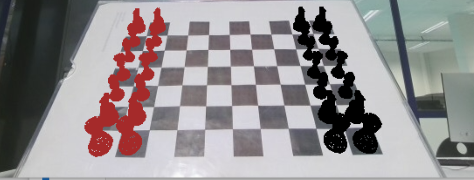
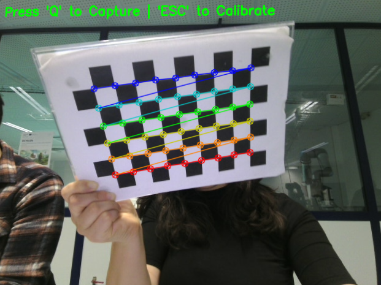
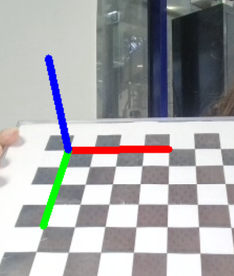
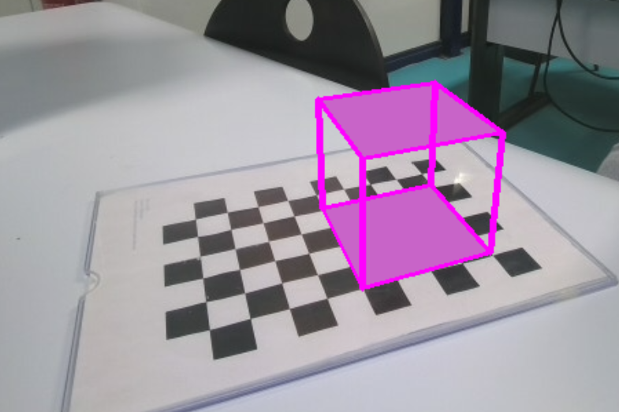
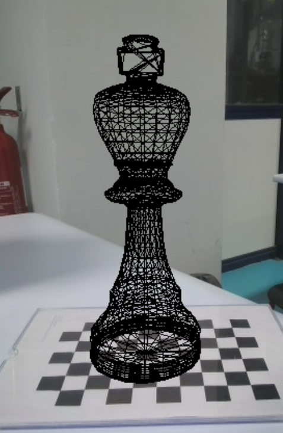

ProjectLIVE CAMERA
Augmented reality: from camera calibration to a chess engine
A real-time AR pipeline built from scratch: calibrate a webcam, estimate where it is relative to a chessboard, and render 3D chess pieces that stay anchored to the board as the camera moves.
- Context
- Computer vision course project
- Year
- 2025
- Work
- Individual
- Stack
- Python · OpenCV · OpenGL / GLSL

01Camera calibration
- A live capture tool: press Q to grab a view, ESC to calibrate. 46 chessboard views were captured, with automatic corner detection and sub-pixel refinement.
- OpenCV calibration gives the camera matrix and the distortion coefficients, saved to a file and reused by every later stage.

02Pose estimation with PnP
Knowing the board's real geometry and where its corners appear in the image, solvePnP recovers the
rotation and translation of the camera. Projecting 3D axes, then a cube, a pyramid and a cylinder checks that the pose is right.


03Rendering real 3D models
- A small OBJ loader for the chess piece meshes (king, queen, rook, bishop, knight, pawn).
- GLSL shaders (model-view-projection and Phong lighting) to draw the pieces over the camera image.
- Keyboard control to switch objects and scale them in real time (+ / −).

04Placing pieces on squares
Each square's centre is computed in the board frame, so a piece can be placed on any square and the full starting position rendered. Everything is recomputed every frame, so the pieces follow the board as it moves.